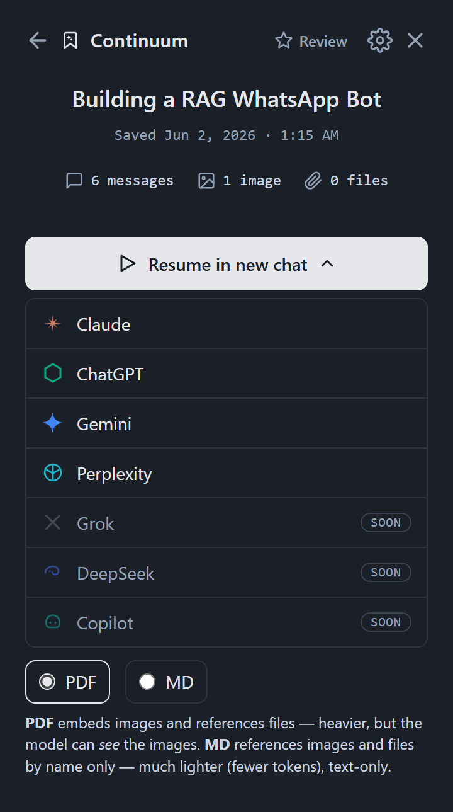
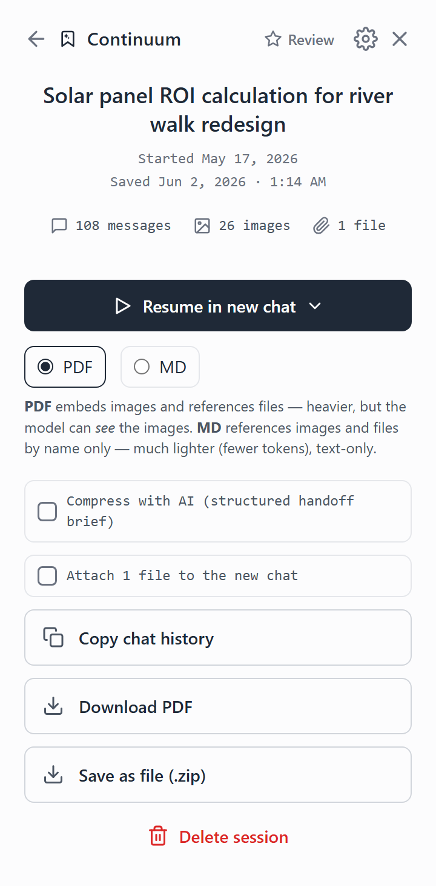
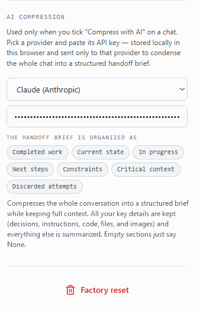

Read and seen
Real text, not a screenshot, plus embedded images. The richest hand-off for vision models.
Continuum captures the full conversation and reopens it in a fresh chat on any AI, with every message, image, file, and code block intact.
Free. Works locally. No account.
Hit a length limit on Claude? Pick the thread back up on ChatGPT, Gemini, or Perplexity. Continuum writes the hand-off and attaches the history, so the new model starts with full context.


Continuum builds a single PDF of the whole chat. The text is real, not a screenshot, and your images are embedded inline so the resuming model can actually look at them, not just hear about them.
Real text, not a screenshot, plus embedded images. The richest hand-off for vision models.
Text-only, fewer tokens. Files and images referenced by name.
Every message, file, and image saved to disk, exactly as captured.
Condense a long chat into a structured hand-off brief, organized by completed work, current state, next steps, and the constraints that matter. Your decisions, code, and images are kept; the noise is summarized.

Your chats and keys never leave your device. No tracking, no analytics, no cloud. Make it yours with dark mode, auto-send, and an editable hand-off message.
Open the panel on any supported AI and save the live conversation in one click.
Messages, images, files, and code, stored exactly as shown, on your device.
Pick a destination. Continuum opens a fresh chat and attaches the history.
It writes the hand-off and uploads the PDF, or pastes the markdown, for you.
The model reads the context and picks up exactly where you left off.
No re-explaining. Same thread, any model, full memory of the work.
Continuum is just getting started. Here is what is next.
Grok, DeepSeek, and Copilot join the resume picker, and a session can hand off to coding agents like Claude Code, alive from chat to editor and back.
Send every captured chat straight into your Obsidian vault or Notion workspace as a clean, linked note.
Save a chat as HTML for a browsable, self-contained page, or as JSON for clean, structured data you can pipe anywhere.
A native Continuum app to search, organize, and resume your entire chat library outside the browser.
Install Continuum and stop losing context to length limits.